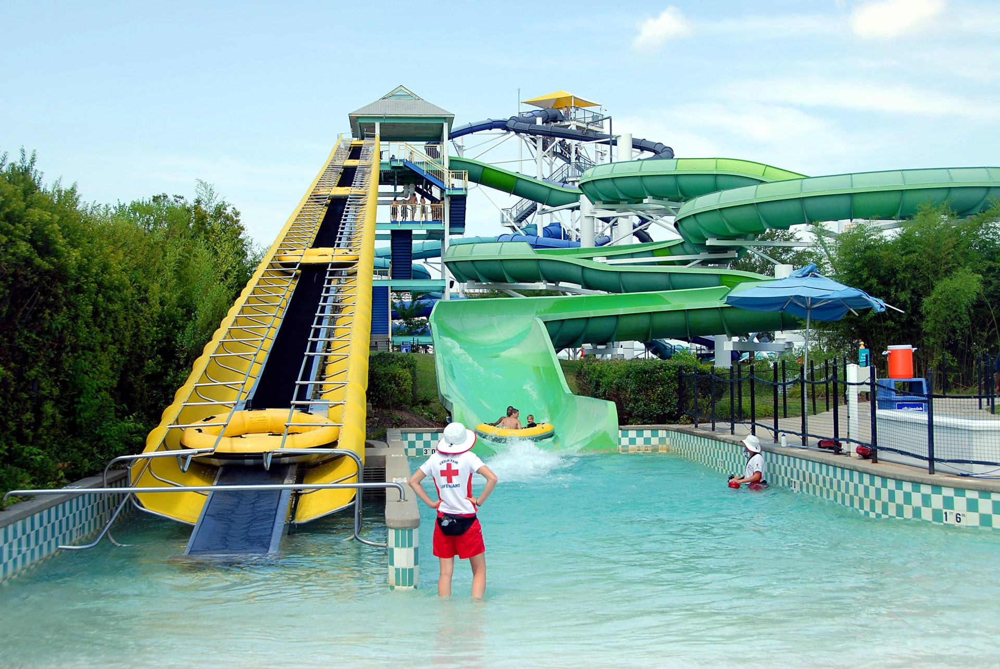

Sparkling Water Hostel
The Hostel Sparkling Water is a fictitious hostel located in Caxambu-MG. Caxambu is a small town(its population in 2020 was estimated at 22,000) renowned for its spa which has twelve sources of sparkling mineral water flowing 24 hours a day and a cold-water geyser.
Caxambu is the only place in the world with 12 mineral water springs, each with different chemical properties.
Park
The water park is the main attraction in town.
Photo of the Water Park.
How to get to the Hostel?
From Rio de Janeiro
Via BR-116(President Dutra) west past Resende-RJ to the village of Engenheiro Passos-RJ and take BR-354 north.From Belo Horizonte or São Paulo
Via BR-381 to Campanha-MG, then west on BR-267.Famous Turism Quotes
Never go on trips with anyone you do not love.
Ernest Hemingway
To travel is to discover that everyone is wrong about other countries.
Aldous Huxley